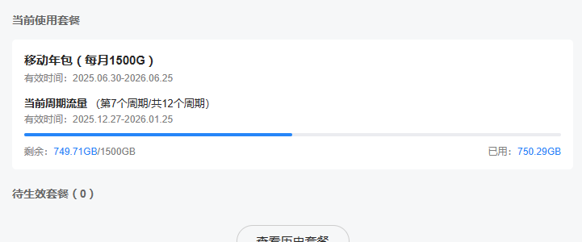

奶昔🥤
@realNyarime
如果没退款，那真得被喷了。好比WiFi设备是车，流量是油，用户付了钱加满了油箱，一天跑一点点或者出个远门一天跑完油，是用户的权利，这跟用机场VPN是一个道理😂
主要他套餐是限流量的，你管我一天用完还是一个月用完，买的套餐就是1500G，购买时也没说过。单纯觉得这种一刀切行为有点过分，他应该是限速而不是直接给人家断网了

Jason Lee
@skaas777
@realNyarime 怎么说呢？既然不给用了，退款的话也没太大毛病，如果不给退才有问题。